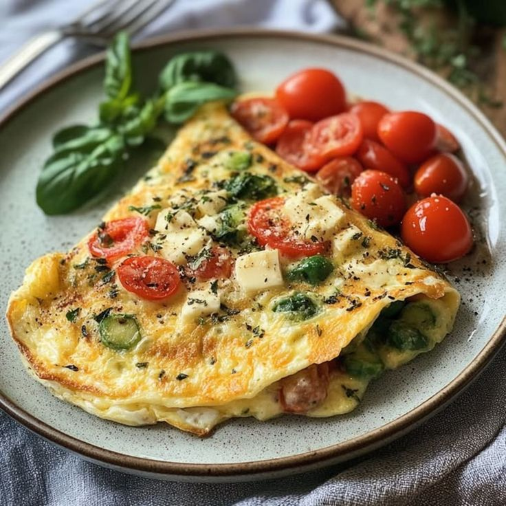
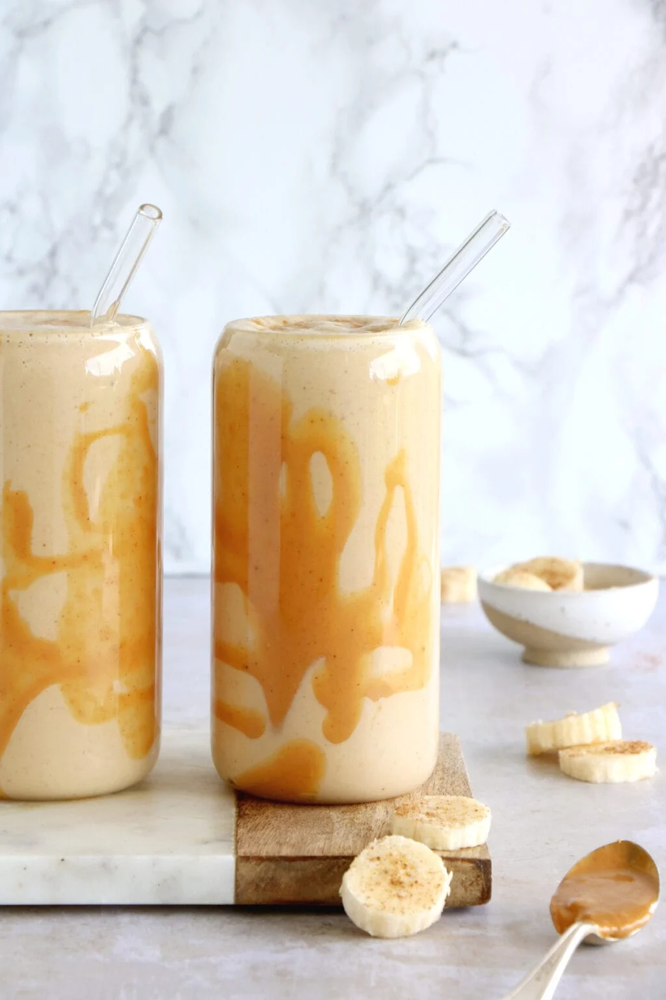
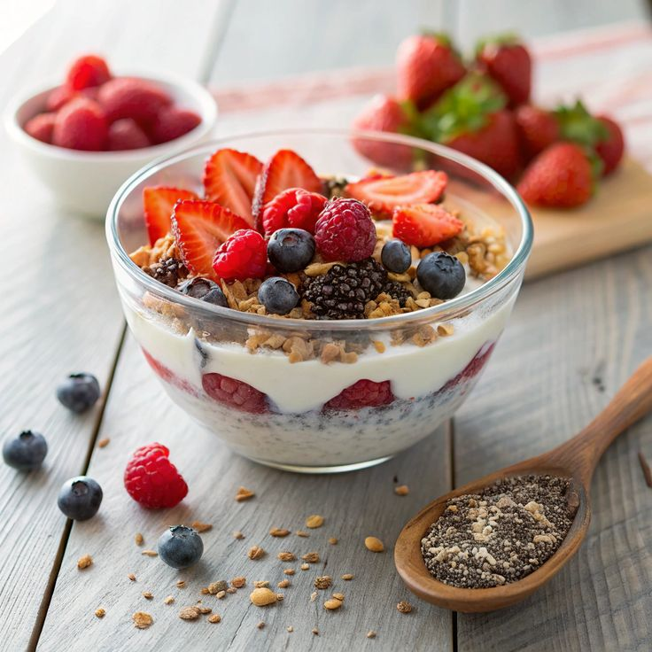

Ingrédients:
- 2 œufs
- 1 blanc d'œuf
- ½ poivron coupé en dés
- 1 petite tomate coupée
- 30 g de fromage râpé (type Edam ou Gruyère)
- 1 c. à café d'huile d'olive
- Sel, poivre, origan
Préparation:
- Battez les œufs avec le blanc d'œuf, le sel et les épices.
- Faites revenir les légumes dans une poêle avec l'huile d'olive pendant 2 minutes.
- Versez les œufs battus, ajoutez le fromage, couvrez et laissez cuire à feu doux 5-6 minutes.
- Servez chaud.

Ingrédients:
- 1 banane moyenne (env. 120 g)
- 1 cuillère à soupe de beurre de cacahuète naturel (15 g)
- 200 ml de lait végétal non sucré (amande ou soja)
- 1 cuillère à soupe de flocons d’avoine (10 g)
- 1/2 cuillère à café de cannelle (optionnel)
- 1 dose de protéine en poudre nature ou vanille (optionnel)
Préparation:
- Coupe la banane en morceaux.
- Ajoute tous les ingrédients dans un blender.
- Verse dans un grand verre et savoure immédiatement.
Calories : ~370 kcal | Protéines : ~26 g | Glucides : ~34 g | Lipides : ~13 g
Ingrédients:
- 1 tranche de pain complet (env. 40 g)
- 1/2 avocat moyen (env. 70 g)
- 1 œuf
- Sel, poivre
Préparation:
- Fais griller la tranche de pain complet.
- Écrase l’avocat dans un bol, ajoute un filet de jus de citron, sel et poivre.
- Étale l’avocat écrasé sur le pain grillé.
- Prépare l'œuf et Dépose l’œuf sur le toast.

Ingrédients:
- 40 g de flocons d’avoine
- 100 ml de lait végétal non sucré (amande, soja, avoine...)
- 1 cuillère à café de graines de chia ou de lin
- 1/2 banane ou 1 fruit frais coupé (ex : fraises, myrtilles, kiwi...)
- 100 g de yaourt grec nature 0 à 5 % MG
- Toppings : fruits secs, noix, beurre de cacahuète (facultatif selon objectif)
Préparation:
- Dans une casserole, chauffe les flocons d’avoine avec le lait végétal à feu doux (3 à 5 min) en remuant.
- Une fois la texture crémeuse, retire du feu et ajoute les graines de chia si souhaité.
- Laisse tiédir un peu, puis ajoute le yaourt grec pour une texture onctueuse et fraîche.
- Coupe les fruits frais et ajoute-les par-dessus.
- Ajoute un topping sain si désiré (amandes, noix, beurre de cacahuète...).